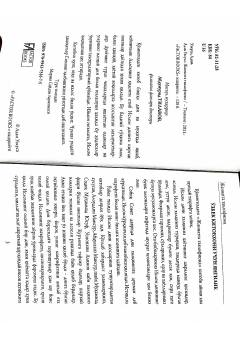

JTTurli dinlardan Islomga kirgan insonlarning ta'sirli va ibratli hayotiy hikoyalari to'plami.
Ushbu kitob turli din va muhitlarda yashab, keyinchalik Islom dinini qabul qilgan insonlarning hayotiy hikoyalarini jamlaydi. Muallif Adam Uzkusa turli mamlakatlarda bo'lib, sobiq ruhoniylar, san'atkorlar va boshqa kasb egalarining Islomga kirish jarayonidagi ta'sirli kechinmalarini qalamga olgan. Asar o'quvchini imon ne'mati va Islom haqiqati haqida chuqur mushohada yuritishga chorlaydi.